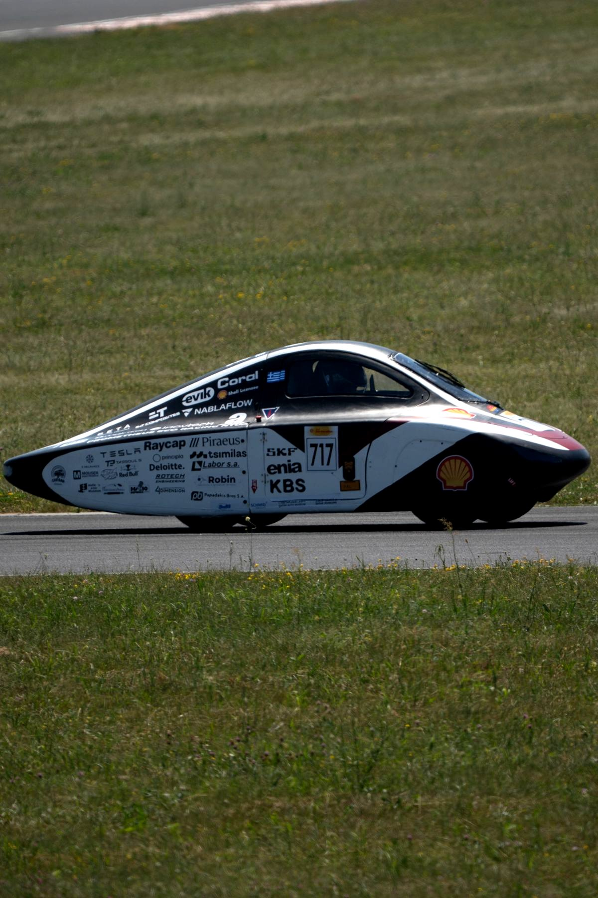
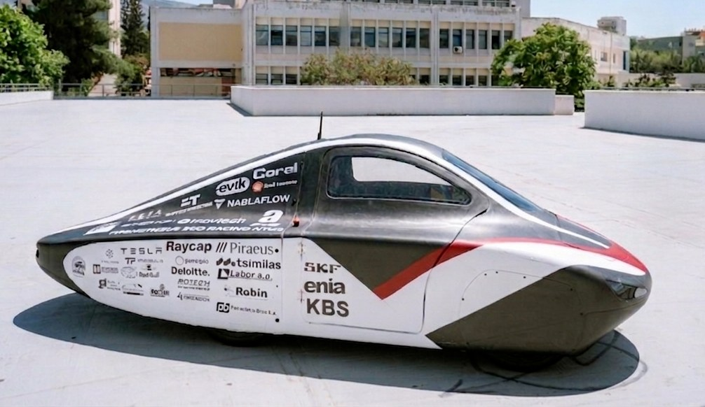

Prometheus Eco Racing — NTUA / Team page
Prometheus Eco Racing.
Battery Electric Urban Concept prototype for the Shell Eco-marathon, built by Prometheus Eco Racing at the National Technical University of Athens. I joined in September 2025 as Head of Mechanical Engineering, leading mechanical development across all nine subsystems of PYRFOROS IV, the team's fourth-generation car, two of them shared with teammates.

FIG. 01 — PYRFOROS IV on track, Shell Eco-marathon Europe 2026
Role and ownership
Prometheus Eco Racing is NTUA's Shell Eco-marathon team, competing in the Battery Electric Urban Concept class. PYRFOROS IV is its fourth-generation car and the first I worked on: a clean-sheet platform rather than a revision of the one before it.
As Head of Mechanical Engineering I own every mechanical subsystem on the car — nine of them: aerodynamics, monocoque, suspension, steering, brakes, transmission, motor, wheels and ergonomics. Two of those I share, and the next paragraphs say exactly how.
The design was driven by lap simulation rather than by intuition: 48% of lap energy went to aerodynamic drag and 26% to rolling resistance and mass, which is what put aerodynamics and kerb mass at the top of the list. The PYRFOROS IV case study carries the full development narrative and the generational comparison; monocoque, aerodynamics and suspension each have a case study of their own.
- Aerodynamics & CFD
- CFRP monocoque
- Suspension
- Steering — shared, see below
- Brakes
- Transmission — shared, see below
- Motor, mechanical design
- Wheels
- Ergonomics & packaging

Steering. I guided the design and the working principle. A teammate did the calculations that achieve Ackermann steering, and packaged the linkage inside the body.
Transmission. I did the system architecture, the generative-design study of the motor mount and of the large driven pulley, and I reverse-engineered the GT3 tooth profile from patents and published literature — the profile, not the belt system, and not against a supplier's own data. A teammate did the force calculations. The motor that drives it is scoped separately again: I did the mechanical design, the electrical group carried the electromagnetic and controller side, and the motor case study sets out that split.
Those two attributions are the reason the other seven are worth anything. Brakes and ergonomics I owned outright, but neither has published source material behind it yet, so they appear here as scope and nowhere else as numbers.
Competition results
7th in class
Vehicle Design Award · winner
Projects

Concept & Architecture
A point-mass lap-simulation energy budget, 48% drag and 26% mass, run before the detailed geometry was defined — the enclosed-wheel packaging decision and the four architecture changes it produced.
Case study →
Monocoque & Composites
A load-bearing CFRP sandwich shell at 2.1 mm average thickness — RVE-homogenised laminate, four regional ply stacks, five load cases at Tsai–Wu RF ≥ 1.0.
Case study →
Aerodynamics & CFD
Cd 0.111 (CFD) on a 0.882 m² frontal area — a component drag audit putting 40.35% on the wheel enclosures, lift logged as a cost, and what the solver report does not state.
Case study →
Suspension & Steering
Double-wishbone front and trailing-arm rear where the last car was rigid — dampers characterised across five settings on a shock dynamometer, near-ideal Ackermann steering, and 30 individually replaceable parts.
Case study →
Motor & Drivetrain — Mechanical Design
Mechanical design of the in-house drive motor and its 6:1 belt drivetrain — lap-simulation-sized, −20 kg powertrain mass vs. the prior generation.
Case study →